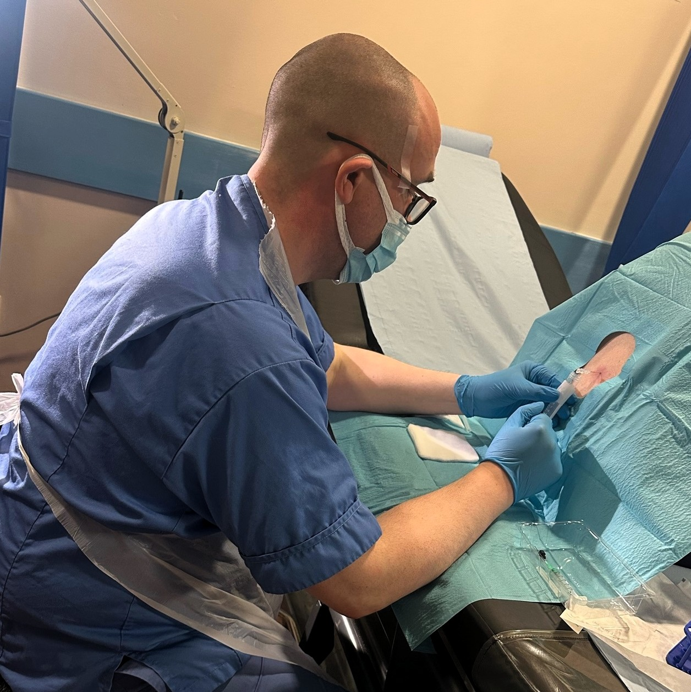
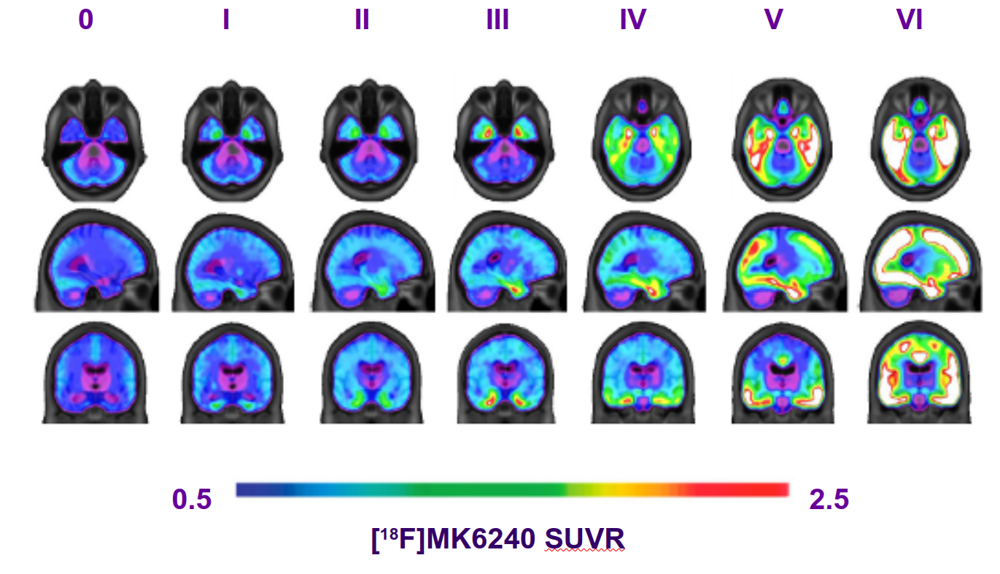
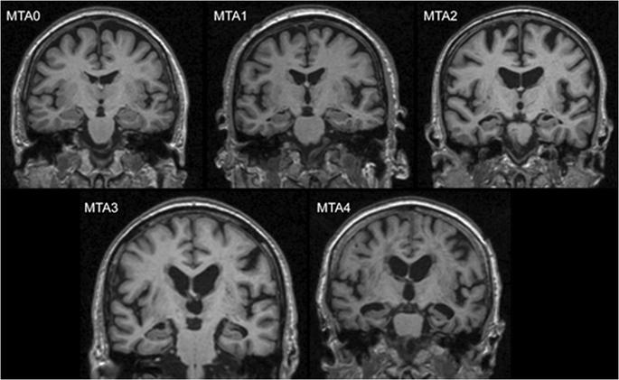
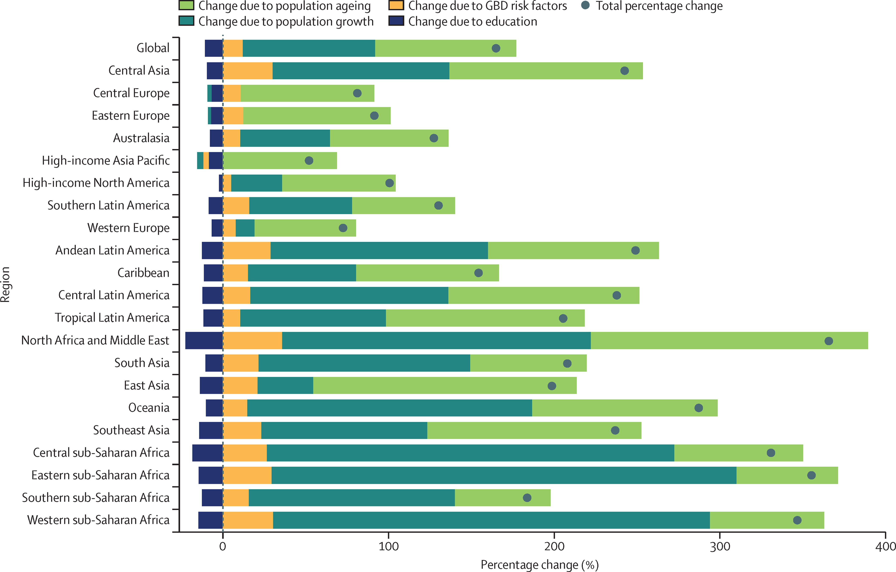
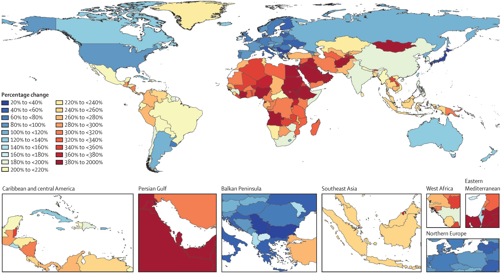
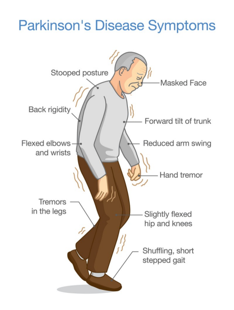
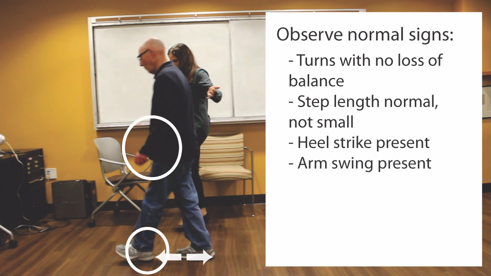
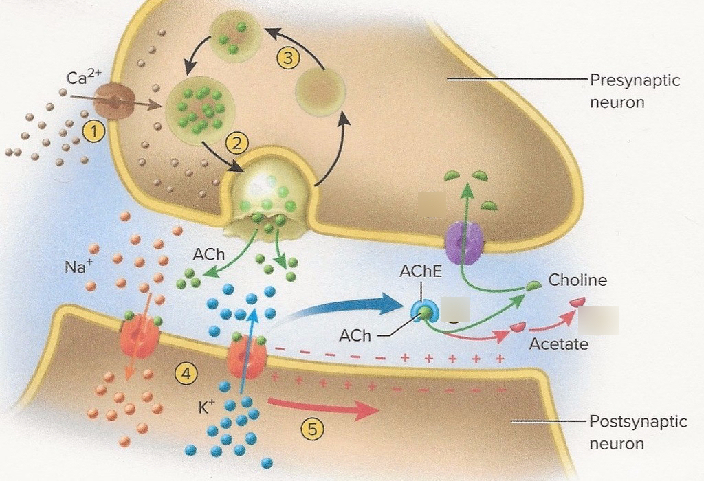
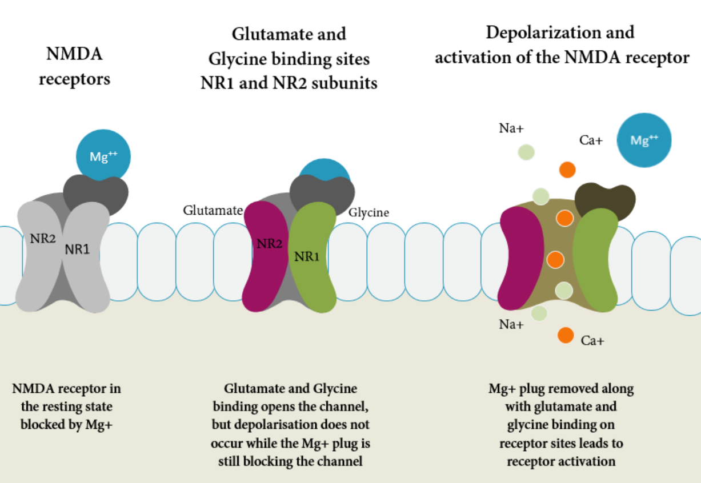
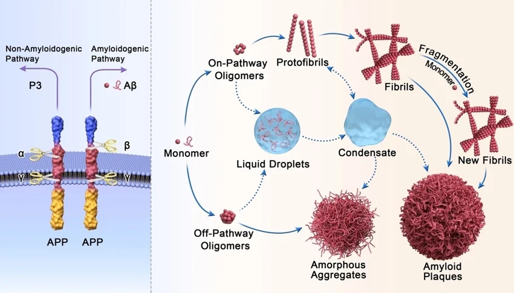

Dementia and its treatments
UoM April 2026
GMDRC
2026-04-26
Outline ⌚
- 20 minutes on “Dementia”, to give a modern framework for understanding
- 20 minutes on the development of symptomatic treatments
- 5 minute break
- 20 minutes on “Disease modifying” treatments.
- 5 minutes for questions for me on the material presented
- 10-20 minutes Q and A trial participant with me
- 10 minutes Qs from students
Part 1: Dementia
A modern framework
Alzheimer’s disease is not synonymous with dementia
Dementia is an umbrella term used to describe a state where an individual has lost the ability to carry out daily life activities independently, because of cognitive impairment.
There are many types and causes of dementia.
The most common ones are:
- Alzheimer’s disease (AD)
pathological definition - Vascular dementia
aetiological definition - Dementia with Lewy bodies
molecular definition - Frontotemporal dementia
anatomical definition
Nature Neuroscience overview
Question 1
Alzheimer’s disease is a disease like any other
AD refers to the abnormal presence of Aβ and tau proteins which define AD among many other neurodegenerative diseases
Some individuals may have dementia without Aβ or tau pathology, while others (rarely) may have no clinical symptoms, even in the presence of Aβ pathology.
Biological vs clinical definition
The old way pre-2010
- Clinical syndrome → “probable AD”
- Pathology only confirmed at post-mortem
- Heterogeneous cohorts in trials
- “Dementia of the Alzheimer type”
The modern way 2018 NIA-AA, 2024 revised criteria
- Biology defines the disease
Aβ + tau - Clinical stage is described separately
- Biomarkers in life: CSF, plasma, PET
- Allows pre-symptomatic diagnosis
Question 2, Higher or Lower?
The AT(N)(X) framework
What it measures: cerebral Aβ pathology.
- CSF Aβ42/40 ratio
low = abnormal - Plasma Aβ42/40
replaces some lumbar punctures - Amyloid-PET
florbetapir, flutemetamol

What it measures: tau pathology.
- CSF p-tau181, p-tau217
- Plasma p-tau217
- Tau-PET
flortaucipir, tracks Braak staging

What it measures: downstream injury, not specific to AD.
- Structural MRI atrophy
MTA score - FDG-PET
temporo-parietal hypometabolism - CSF total tau

What it measures: vascular, inflammatory, synaptic axes added in 2024.
- Vascular markers
WMH, infarcts - Inflammatory
GFAP, astrocyte activation - Synaptic
neurogranin, SNAP-25

Question 3
The global prevalence of dementia is increasing
There are many causes of dementia, but AD is the most common cause in individuals older than 65 years of age.
In 2020, it was estimated that over 55 million people worldwide were living with neurodegenerative disease at the dementia stage.
The number of people affected is set to rise to 139 million by 2050, with the most significant increases in lower-middle-income (LMIC) countries.
Dementia (including dementia due to AD) incidence and prevalence are increasing globally but are likely to be underestimated because of underdiagnosis and misdiagnosis
As global lifespan continues to increase, the number of people affected by dementia is expected to rise. Up to three-quarters of those with dementia worldwide have not received a diagnosis.
57.4M to 153M by 2050

Global change in dementia prevalence from: Figure 4 Decomposition of percentage change in the number of individuals with dementia between 2019 and 2050 globally and by world region GBD=Global Burden of Diseases, Injuries, and Risk Factors Study; Lancet PH Volume 7, Issue 2e105-e125February 2022
Regions of greatest change

Estimated change per region Lancet PH Volume 7, Issue 2e105-e125February 2022
Historical development of Alzheimer’s disease diagnostic criteria
- The 2023 revised criteria for diagnosis and staging of AD emphasizes that AD is a disease defined by its biology
- However, to avoid misdiagnosis, only biomarkers that have been proven to be accurate with respect to an accepted reference standard should be used for diagnosis
- It is important to note that biomarker tests should always be interpreted with clinical judgment
The clinician’s expertise is crucial in the following situations:
- When the biomarker test result contradicts the clinical presentation
- When evaluating the probable contribution of AD versus other pathologies to clinical symptoms
- When assessing how other medical conditions could possibly impact the biomarker results
Alzheimer’s disease diagnostic biomarkers
Core 1 currently accepted for diagnosis
- CSF Aβ42/40
- CSF p-tau181/Aβ42
- CSF t-tau/Aβ42
- Accurate plasma assays
- Amyloid-PET
Core 2 emerging / research-grade
- Plasma p-tau217
near-CSF accuracy - Plasma MTBR-tau243
- GFAP
astrocyte activation - NfL
non-specific neurodegeneration - Tau-PET
Braak staging in life
:::
Differential diagnosis
- Onset: insidious, episodic memory first
- Signature: temporo-parietal cognition; language; getting lost
- Imaging: medial temporal and parietal atrophy
- Treatment cue: AChEi and memantine; now anti-amyloid eligible
- Onset: fluctuating cognition, visual hallucinations, REM sleep behaviour disorder, parkinsonism
- Signature: attention/executive > memory early; very neuroleptic-sensitive
- Imaging: relatively preserved MTL; DAT scan abnormal
- Treatment cue: rivastigmine often helpful; avoid antipsychotics
- Onset: typically <65 y; behavioural variant or primary progressive aphasia
- Signature: disinhibition, apathy, loss of empathy, dietary change (bvFTD)
- Imaging: frontal / anterior temporal atrophy
- Treatment cue: AChEi unhelpful or may worsen behaviour; SSRIs, environmental management
- Onset: stepwise, after vascular events
- Signature: executive dysfunction, slowed processing, focal neurology
- Imaging: infarcts, white matter hyperintensities, microbleeds
- Treatment cue: aggressive vascular risk control; modest AChEi benefit
Reversible mimics
Treatable contributors to cognitive impairment
- B12 / folate deficiency
- Hypothyroidism
- Depression
pseudo-dementia - Normal pressure hydrocephalus
gait, urinary, cognitive - Drug effects
anticholinergics, benzodiazepines, opioids - Delirium
often superimposed - Obstructive sleep apnoea
- Subdural haematoma
- Alcohol misuse
:::
Assessment
A medical history from the patient and collateral history from an appropriate informant.
- Educational attainment
quantitative and qualitative - Occupational attainment
manual/ skilled/ professional - Head Injury / Contact sports
rugby and boxing - Lifetime Alcohol + substances
peak, sustained - Smoking history
- Rapid forgetfulness
- Repetitive questioning
- Loss of recent memory
with relative preservation of remote - Functional decline
IADLs first, then ADLs - BPSD
agitation, depression, sleep
A cognitive, functional, behavioural and mental state examination (preferably using validated assessment scales)
- RBANS
sensitive to different sorts of decline - Addenbrookes’ Cognitive Evaluation (III)
(90% of UK memory clinics) - Mini Mental State Examination
insensitive to early decline - Montreal Cognitive Assessment
better than MMSE, retains ceiling effects
Physical examination, laboratory tests (to exclude comorbid conditions that may be impairing cognitive function), and review of medication (to identify drugs that may be impairing cognitive function)


- Structural MRI
first-line: medial temporal atrophy (MTA score), parietal atrophy (Koedam), white-matter disease, microbleeds - FDG-PET: temporo-parietal hypometabolism in AD; frontal in FTD
- Amyloid-PET: confirms or excludes Aβ pathology in life
- Tau-PET: research and disease-modifying treatment selection
- DAT scan: supports DLB when uncertain
- CSF panel: Aβ42/40, p-tau181, t-tau
requires lumbar puncture - Plasma p-tau217
near-CSF accuracy, primary care feasible - Plasma Aβ42/40, GFAP, NfL: pre-screening tools
- APOE genotyping: risk stratification; mandatory before anti-amyloid antibodies
- Genetic testing: APP, PSEN1, PSEN2 in early-onset / familial cases
Part 2: Symptomatic treatments
:::
The cholinergic hypothesis (1976)
- Bowen, Davies, Perry independently observed loss of choline acetyltransferase in post-mortem AD brain
- Source: degenerating cholinergic projections from the nucleus basalis of Meynert
- Implication: boost acetylcholine, improve cognition
AChE inhibitor mechanism

- AD brains have loss of cortical and hippocampal ACh
- AChEi inhibit synaptic breakdown of ACh, increasing transmitter availability per release
- Effect is presynaptic compensation; does not modify disease
- Side-effects from cholinergic excess: ↑ vagal tone, GI cramping, bradycardia, vivid dreams
AChE inhibitors: clinical use
- Once daily, oral; 5 mg increased to 10 mg after 6 weeks
most common UK first-line - Long half-life
- Side effects: GI upset, vivid dreams, bradycardia
- Cardiac history → ECG before starting
- BD oral or transdermal patch
useful when swallowing or compliance issues - Inhibits both AChE and butyrylcholinesterase
- Patch reduces GI side-effects substantially
- Drug of choice in DLB and PDD
- BD oral; also a nicotinic allosteric modulator
- Cardiac caution
rare reports of bradyarrhythmia - Less commonly used in UK
Memantine: NMDA receptor antagonism

- Glutamatergic excitotoxicity → tonic NMDA-R activation → calcium overload
- Memantine sits in the channel only when it’s pathologically open
voltage-dependent - Strong physiological NMDA bursts displace it, preserving physiological learning
- Indication: moderate to severe AD, or AChEi-intolerant
- Often combined with donepezil
Effect size of symptomatic treatment
Differential responsiveness across subtypes
Helpful in
- AD
modest, all severities - DLB
often substantial; rivastigmine first choice - PDD
cholinergic deficit prominent - VaD
mixed disease often benefits
Limited or harmful in
- bvFTD
no benefit, may worsen agitation - Pure VaD
inconsistent - Severe AD
memantine takes over
BPSD
- Behavioural and Psychological Symptoms of Dementia
- Up to 90% of patients experience at least one over the course of illness
- Drives
caregiver burden,institutionalisation,mortality - Five clusters:
- Agitation / aggression
- Psychosis
delusions, hallucinations - Depression / anxiety
- Apathy
- Sleep disturbance
Non-pharmacological management of BPSD
- Always rule out a precipitant: pain, infection (UTI, chest), constipation, drug effect, sensory deprivation
- Cognitive Stimulation Therapy
NICE-recommended, group-based - Exercise
aerobic + resistance - Music therapy: strong evidence in agitation
- Environmental modification: light, routine, signage, familiar objects
- Caregiver education and support: often high-yield
Pharmacological management of BPSD
Antipsychotics are last-resort
- ↑ stroke and all-cause mortality
CATIE-AD, FDA black box - Severe sensitivity in DLB: can cause irreversible parkinsonism / NMS
- Use only when behaviour endangers patient or others, lowest dose, short duration, regular review
- SSRIs for depression (citalopram has agitation evidence, but QTc concern)
- Brexpiprazole: first FDA approval for agitation in AD, 2023
not yet NICE-approved on NHS for this indication - Trazodone: sleep, agitation; mostly off-label
- Avoid benzodiazepines: falls, paradoxical agitation, dependence
Limits of symptomatic treatment
- They do not slow neuronal loss
- They do not clear Aβ or tau
- They do not change underlying trajectory
- A patient on AChEi 5 years from diagnosis has the same brain pathology as one untreated
What is important in clinical trials?
5 minute break 🚰 🚽
Part 3: Disease-modifying treatments
The amyloid hypothesis (Hardy & Higgins, 1992)
- Aβ accumulation is the upstream driver of AD
- Genetic anchor: every gene mutation that causes autosomal-dominant AD
APP, PSEN1, PSEN2alters Aβ production or clearance - Down syndrome (trisomy 21 → 3 copies of APP) → near-universal AD pathology by age 50
- Tau pathology, inflammation, neurodegeneration: downstream
- Predicted: lower Aβ → less downstream damage → better outcome
Failed anti-amyloid trials
- Solanezumab: Eli Lilly; failed Phase 3 in mild AD (2014, 2016)
- Bapineuzumab: Pfizer/J&J; failed (2012); high rate of vasogenic edema
- Crenezumab: Roche; failed (2019)
- Gantenerumab: Roche; first GRADUATE trials negative (2022); reformulated for prevention
- Lessons learned:
- Treating too late
pathology has spread for 15+ years - Targeting the wrong species
monomer vs oligomer vs plaque - Insufficient brain penetration / dosing
- Endpoint too noisy in mild populations
- Treating too late
Aducanumab (2021)
- Two Phase 3 trials (EMERGE, ENGAGE): discordant; pre-specified analysis was negative
- Post-hoc reanalysis at high dose suggested cognitive benefit on EMERGE
- FDA accelerated approval June 2021, over near-unanimous advisory panel objection
- EMA refused authorisation
- NHS / NICE: not commissioned
- Eli Lilly withdrew it from market 2024
Lecanemab: CLARITY-AD (2023)
Donanemab: TRAILBLAZER-ALZ 2 (2024)
Antibody specificity

Aβ aggregation pathway 10.1002/chem.202400277
Patient selection
- Confirmed Aβ pathology: amyloid-PET or CSF Aβ42/40
- Disease stage: MCI or mild AD dementia (not moderate or severe)
- MRI suitable: no severe cerebral amyloid angiopathy, ≤4 microbleeds, no superficial siderosis
- Anticoagulation: caution or contraindication
- APOE4 genotyping: needed for ARIA risk counselling
- Capable of attending infusions every 2–4 weeks for 18+ months
- Capacity to consent
ARIA
ARIA-E oedema, effusion
- Vasogenic oedema, leptomeningeal effusion
- Best seen on FLAIR
- Most asymptomatic; caught on surveillance MRI
- Can present with headache, confusion, focal symptoms, seizures
ARIA-H haemorrhage
- Microbleeds, superficial siderosis
- Best seen on SWI / GRE
- Usually asymptomatic
- Persists indefinitely after resolution
- Severity is mostly mild; ~3% serious; rare deaths reported
- Surveillance MRI before infusions 5, 7, 14 (lecanemab) or before 2, 3, 4, 7 (donanemab)
APOE4 and ARIA risk
| APOE genotype | Lecanemab ARIA-E | Donanemab ARIA-E |
|---|---|---|
| Non-carrier | ~5% | ~16% |
| Heterozygote | ~11% | ~23% |
| Homozygote | ~33% | ~41% |
- ε4 homozygotes are ~2% of the population but bear most of the risk
- Counselling: genotype results have implications beyond the individual
family members, life insurance - Donanemab US label restricts use in homozygotes; EMA mandates discussion of relative risk
- Patients can decline genotyping but must be counselled to the higher-risk assumption
UK implementation
- Drug cost: £20–25k per patient per year (lecanemab list)
- Infrastructure: infusion suite every 2 (lecanemab) or 4 (donanemab) weeks
- Surveillance MRI: 4–7 scans per patient course
- Workforce: trained nurses, dementia specialists, neuroradiologists, raters, pharmacists
- NICE August 2024: rejected lecanemab for NHS commissioning; benefit too small at price
- Currently available only privately in the UK; major equity concern
- Open question whether amyloid lowering alone is sufficient or whether combinations will be needed
Other approaches
- Anti-tau antibodies: E2814, JNJ-2056 (zagotenemab discontinued 2023)
Phase 2 - Tau ASOs
intrathecal antisense oligonucleotides, BIIB080 - Inflammation: TREM2 agonists in early trials
- Vaccines: UB-311, ABvac40 (Phase 2)
- Prevention trials in pre-symptomatic carriers:
- DIAN-TU: autosomal-dominant AD families
- AHEAD 3-45: sporadic, plasma p-tau217 stratified
- A4 closed early; solanezumab failed
Current state
- The first disease-modifying drugs exist. Their effect size is modest. ARIA limits use. Access in the UK is restricted.
- Diagnosis: plasma p-tau217 may make primary-care testing feasible.
- Prevention may matter more at a population level than any antibody:
- Lancet Commission 2024: 14 modifiable risk factors account for ~45% of dementia risk
- Hearing, education, BP, smoking, obesity, depression, physical inactivity, diabetes, alcohol, social isolation, air pollution, head injury, vision, cholesterol
What is a Brain Health Centre?
Same patient. Same disease. Different future.
A Brain Health Centre is not a relabelled memory clinic. It redesigns the pathway so that biomarkers, vascular workup, and behavioural support arrive together, early, before too much brain has been lost.
Today only 1 in 800 UK patients with memory symptoms gets a biomarker-confirmed diagnosis. The other 799 are Mary on the upper track.
Manchester Brain Health Centre
HSJ-recognised model · UK’s first Alzheimer’s Society-funded Brain Health Advisors in post · pTau217 Elecsys live by mid-2026 (first site globally)
What’s next, and why it matters
What’s next at MBHC
- One-stop blood-first pathway live in clinic from Q3 2026
- First UK site to deploy pTau217 Elecsys for routine NHS care
- Brain Health Advisors trained in motivational interviewing, embedded in pathway
- Five-year cohort study with GSK, ASL imaging endpoints for future trials
- Hub-and-spoke model across Greater Manchester
Why it matters for psychology
- Pathology starts 20+ years before symptoms. Behaviour change has the most leverage when started early.
- Disease-modifying drugs (lecanemab, donanemab) are MHRA-licensed but not yet on the NHS. Eligibility depends on biomarkers.
- Most modifiable risk factors are psychological and behavioural: hearing aid use, exercise, sleep, social engagement, mood.
- This is where psychologists work, with clinicians, on the things that actually shift the curve.
Lancet Commission 2024 (Livingston et al). · MBHC Phase 2 simulation, Tranoca interim analysis · Brum et al., Nature Aging 2023 (two-step pTau217 workflow)
Questions on the material (5 min)
?
Q&A with trial participant (10–20 min)
Welcome! 👋
Student questions (10 min)
over to you
Summary
Dementia is a syndrome; AD is defined biologically. Aβ and tau can be detected in life via CSF, plasma p-tau217, or PET.
Symptomatic treatments help modestly and do not change disease course. AChEi and memantine offer about a 6-month delay. Non-pharmacological BPSD interventions are first-line. Antipsychotics carry mortality risk.
Anti-amyloid antibodies are the first disease-modifying drugs. Effect size is modest. ARIA limits use. NICE has rejected them for the NHS. Prevention may matter more.
References
Dementia - novel treatments